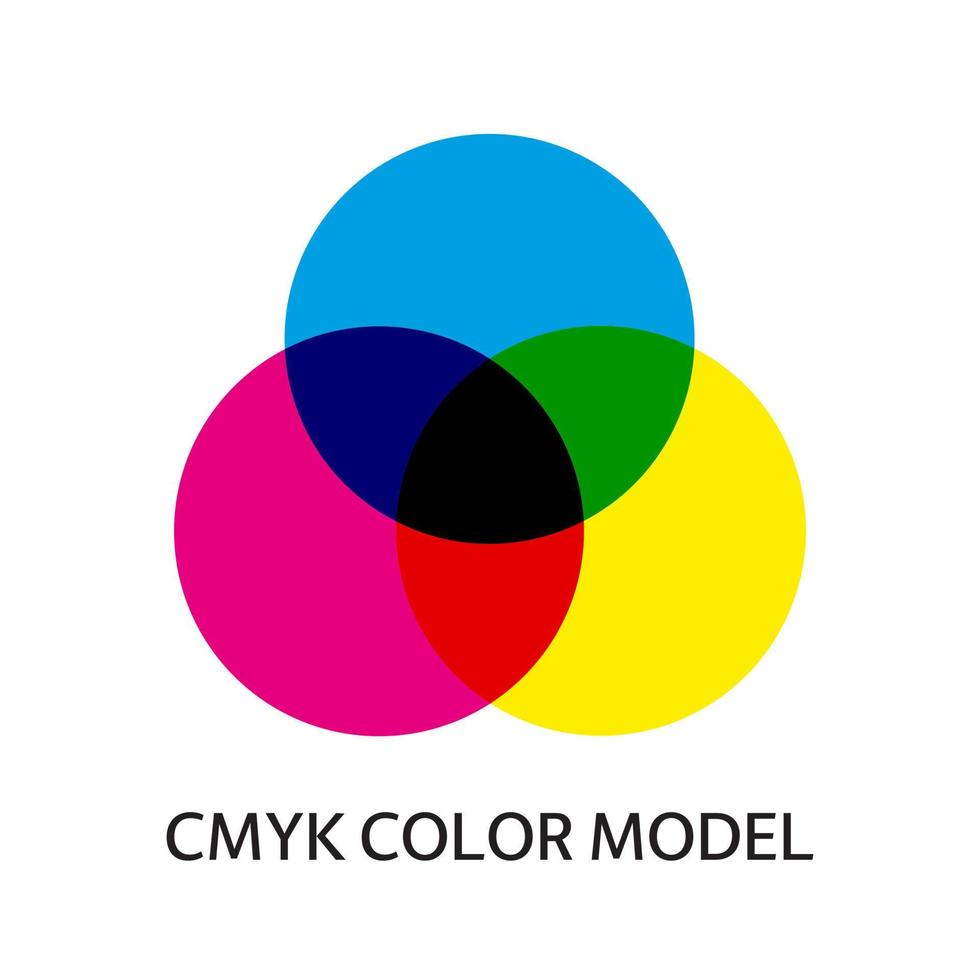

Wist je dat je met het kleurmodel
RGB 16.777.216 kleuren kunt maken?
Kleurmodellen
Een manier om een kleur numeriek te beschrijven wordt een kleurmodel genoemd. Veel voorkomende kleurmodellen zijn RGB, HSV en CMYK. In totaal zijn er gek genoeg maar 2 typen kleurmodellen namelijk additieve en subtractieve kleurmodellen. Daarbij zijn er vier hoofdkleursystemen en 6 basiskleuren.
Kleurmodel RGB
Bij RGB is het zo dat de drie primaire kleuren rood, blauw en groen een additief kleursysteem vormen. Dit model wordt gebruikt om door het gebruik van een code kleuren vast te leggen. De kleuren rood, groen en blauw zijn de kleurcomponenten en zwart is de basiskleur.

Kleurmodel CMY-K
Het kleurmodel CMY-K is een subtractief kleurensysteem. Vaak wordt dit systeem gebruikt binnen drukkerijen. CMY-K staat voor Cyan, Magenta, Yellow and Key. Dit zijn de basiskleuren. Door deze basiskleuren kunnen we de grootst mogelijke kleurengamma verkrijgen. Daarmee kan je vrijwel elke tint krijgen die je nodig hebt. Het woordje Key in CMY-K staat voor zwart. Die wordt zo genoemd om verwarring tussen Blue en Black te voorkomen.

Pixels
Pixels zijn kleine gekleurde puntjes waaruit digitaal beeldmateriaal is opgebouwd. Hoe meer pixels je hebt, hoe scherper je beeld is. Heel veel pixels samen kunnen een afbeelding op een scherm vormen. Ook kunnen er zonder pixels in te schakelen geen complexe beelden en graphics ontstaan. Pixels worden ook wel afgekort naar px. Een pixel is 1/96 inch wat vertaalt naar 0,26 mm.